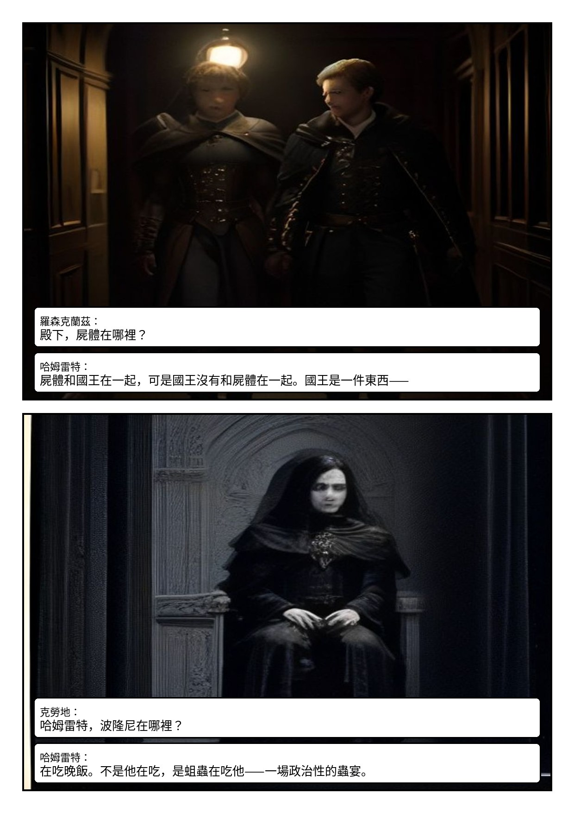
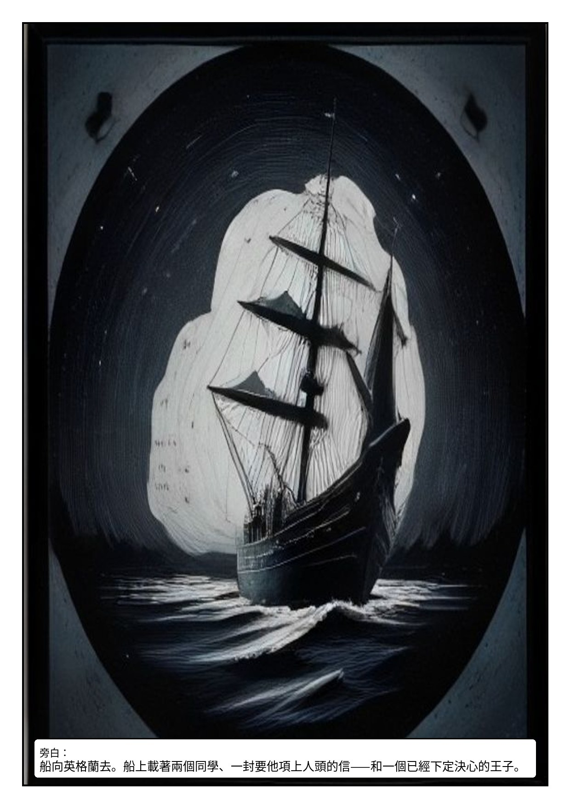

Act IV · Scenes I–IV
放逐英格蘭Elsinore. A Plain in Denmark.
❦
一封要人命的密函、一支路過的大軍，與染上血色的思想。
本場人物哈姆雷特・全身黑衣／克勞地・尖鬚金冠／葛簇特・赭紅盤辮／羅森克蘭茲、吉爾登斯坦
首輪草稿・Pollinations 免費生圖——校構圖與對白用，角色定裝後會全面重生


Act IV · Scenes I–IV
一封要人命的密函、一支路過的大軍，與染上血色的思想。
本場人物哈姆雷特・全身黑衣／克勞地・尖鬚金冠／葛簇特・赭紅盤辮／羅森克蘭茲、吉爾登斯坦
首輪草稿・Pollinations 免費生圖——校構圖與對白用，角色定裝後會全面重生

